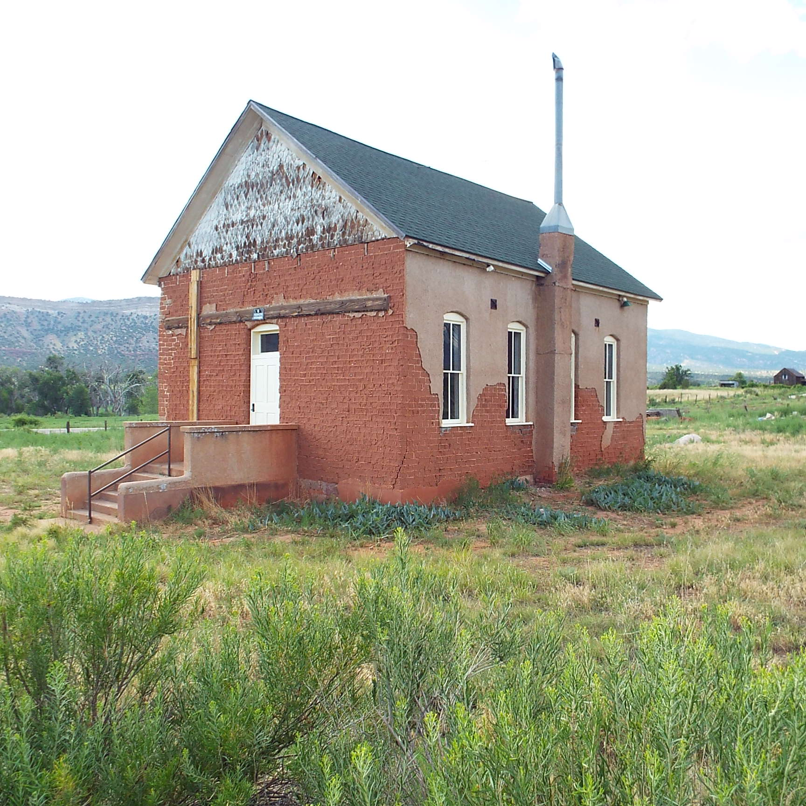

Fall Grants

Awarded Projects
Fall 2018
Find out which preservation projects were awarded in our most recent Fall Grant round.
Spring Grants
Awarded Projects
Spring 2018
Find out which preservation projects were awarded in our most recent Spring Grant round.